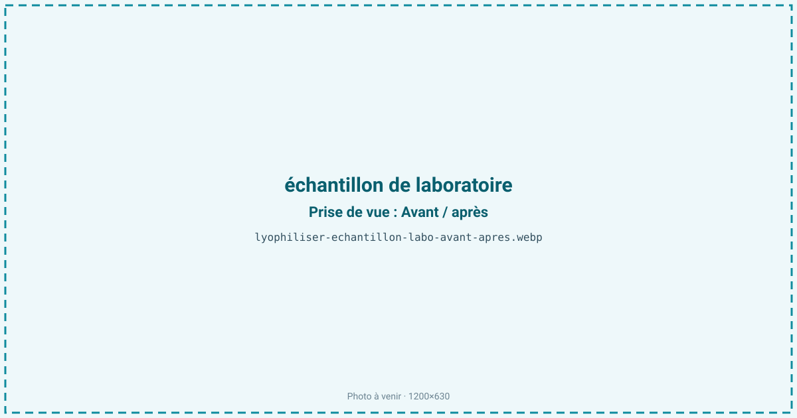
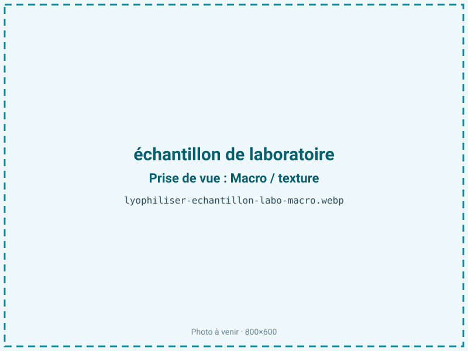
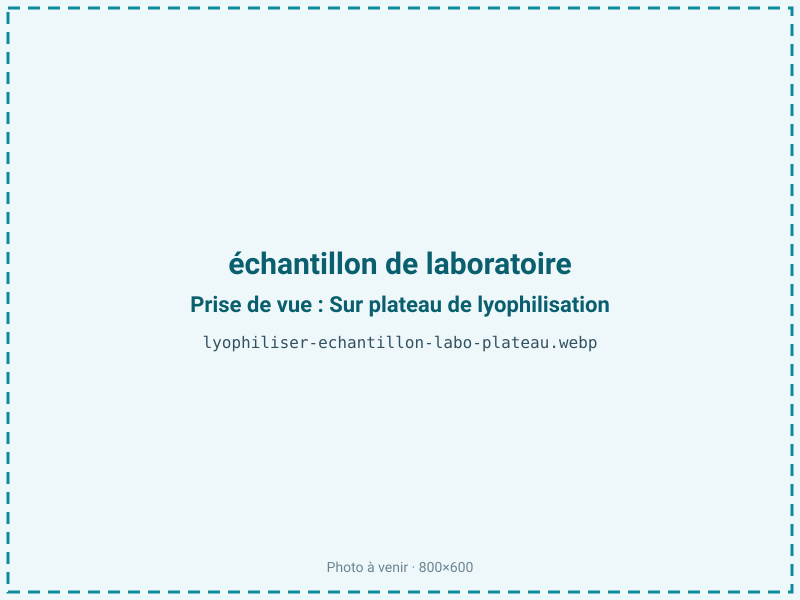
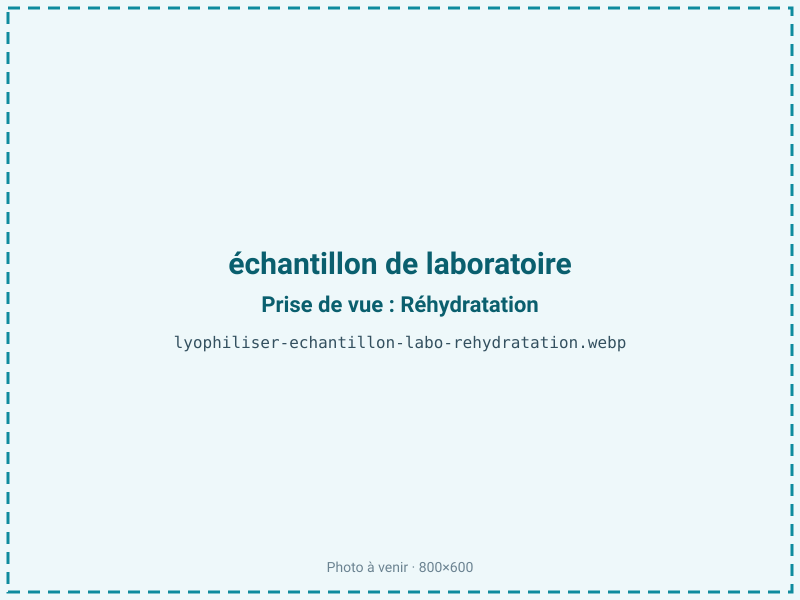

Lyophiliser des échantillons de laboratoire
Un échantillon biologique en suspension perd sa viabilité ou son activité en quelques jours à quelques semaines et impose une chaîne du froid coûteuse à −80 °C. La lyophilisation le fige à l'état vitreux dans un flacon scellé, stable plusieurs années à température ambiante, sans azote liquide ni congélateur. C'est la méthode de référence des collections de souches et des banques de réactifs.

En bref
Comment échantillon de laboratoire se comporte à la lyophilisation
Sous l'appellation « échantillon de laboratoire » se cachent des matrices très diverses — suspensions bactériennes, sérums, solutions d'enzymes, plasmides, vaccins, standards de référence — mais toutes sont des solutions ou suspensions aqueuses diluées, souvent à plus de 90 % d'eau. Le paramètre déterminant n'est pas la teneur en eau mais la température de collapse de la formulation, liée à la Tg' de la phase amorphe maximalement cryoconcentrée.
À la congélation, l'eau cristallise et concentre les solutés dans une phase résiduelle : cette cryoconcentration expose les cellules à des forces osmotiques élevées et à des variations de pH (un tampon phosphate peut se décaler de 1 à 2 unités quand un de ses sels cristallise), ce qui endommage protéines et membranes. La glace intracellulaire et l'interface glace-liquide dénaturent enzymes et immunoglobulines. C'est le rôle des lyoprotecteurs — tréhalose, saccharose — qui vitrifient le milieu et remplacent les liaisons hydrogène de l'eau autour des structures. À la sublimation, le front doit rester sous la température de collapse : au-delà, le gâteau s'effondre, piège de l'eau résiduelle et ruine l'échantillon.
Paramètres de cycle
Répartir en faible hauteur de remplissage, idéalement 10 à 15 mm par flacon, pour ne pas allonger la sublimation ni créer de gradient. La congélation se pilote selon la cible : refroidissement lent (≈ 1 °C/min) pour ménager les cellules vivantes, parfois avec un palier de recuit pour cristalliser le mannitol et structurer le gâteau. En primaire, la clayette est réglée pour que la température produit reste sous le collapse — souvent −30 à −40 °C avec les formulations riches en mannitol, plus tolérant avec le tréhalose. Le secondaire monte ensuite en clayette vers 20 à 30 °C pour abaisser l'humidité résiduelle. Bouchage sous vide ou sous azote en fin de cycle. La cible d'aw de 0,05 à 0,20 se justifie par la nature maigre (moins de 2 % de lipides) : une aw basse est ici favorable, car elle maintient l'état vitreux, bloque l'hydrolyse et la mobilité moléculaire, sans le risque de rancissement propre aux produits gras. Le critère d'arrêt se cale sur la convergence des jauges de pression ou une humidité résiduelle mesurée.
Pièges connus
- Cryoprotecteurs et protocole adaptés à chaque échantillon.
- aw très basse et traçabilité complète.



Variantes & provenance
Tout dépend de la nature de l'échantillon. Une souche bactérienne vivante exige un lyoprotecteur (tréhalose, saccharose, lait écrémé) et un refroidissement contrôlé pour maximiser la survie ; un sérum ou une solution d'anticorps demande surtout de rester sous le collapse pour préserver la conformation ; un plasmide ou de l'ADN tolère un cycle plus agressif. Les bactéries sporulantes survivent presque toutes, les Gram négatif et les cultures fragiles beaucoup moins. La formulation — nature du tampon, présence de mannitol cristallisable ou d'un amorphe vitrifiant, concentration cellulaire de départ — change davantage le procédé que le volume lui-même. Chaque type d'échantillon suppose donc son protocole documenté et, souvent, un essai pilote.
Conservation & DLUO
Le facteur limitant réel est double : la reprise d'humidité, qui fait remonter la mobilité moléculaire et peut réhydrater partiellement le gâteau, et la perte progressive de viabilité ou d'activité (dénaturation lente des protéines, réactions de Maillard si un sucre réducteur comme le lactose côtoie des amines). Produit maigre (moins de 2 % de lipides), il gagne à une aw basse, de 0,05 à 0,20 : contrairement aux matrices grasses, descendre reste favorable, même si certaines cellules vivantes ont un optimum de survie vers 1 à 3 % d'humidité résiduelle plutôt qu'à sec absolu. En flacon scellé sous vide ou sous azote, la conservation se compte en plusieurs années, souvent une décennie ou plus pour une souche en ampoule scellée. Un stockage au frais et à l'abri de la lumière ralentit encore l'inactivation.
Plusieurs années en flacon scellé sous vide ou azote.
Estimez selon votre emballage :
Face aux autres procédés de séchage
Aucun séchage thermique n'est envisageable ici. Le séchage à l'air chaud et le micro-ondes sous vide dénaturent enzymes et anticorps et tuent les cellules vivantes bien avant que l'eau ne soit retirée : la chaleur est rédhibitoire pour du matériel biologique. Le séchage à l'air ambiant est trop lent et laisse proliférer les contaminants pendant que le métabolisme s'épuise. Seule la lyophilisation retire l'eau à froid en préservant la structure vitrifiée, la viabilité et l'activité. Son véritable concurrent n'est d'ailleurs pas un autre séchage mais la congélation à −80 °C ou l'azote liquide : la lyophilisation supprime cette chaîne du froid et rend l'échantillon transportable et stockable à température ambiante.
Marchés & applications
Collections et centres de ressources biologiques (conservation de souches de référence), laboratoires de contrôle qualité et diagnostic (standards et réactifs stabilisés), fabricants de kits de PCR à billes lyophilisées, biotech et startups de fermentation, laboratoires académiques. Produits finis courants : ampoules de souches de collection, contrôles positifs lyophilisés, réactifs prêts à reconstituer, échantillothèques de référence à long terme. La clientèle cherche la traçabilité, la reproductibilité et l'affranchissement de la chaîne du froid pour l'expédition et l'archivage.
- Souches et ferments de collection
- Réactifs stabilisés
- Échantillothèque de référence
Questions fréquentes — échantillon de laboratoire
Peut-on lyophiliser des bactéries vivantes sans les tuer ?
Oui, avec un lyoprotecteur adapté et une congélation contrôlée. Le taux de survie varie selon les souches — presque total pour les sporulantes, plus faible pour les Gram négatif fragiles — mais la fraction survivante reste stable des années.
Faut-il ajouter un cryoprotecteur ?
Presque toujours pour du vivant : tréhalose, saccharose, lait écrémé ou mannitol. Ils vitrifient le milieu et protègent membranes et protéines pendant la congélation et le séchage.
Quelle humidité résiduelle viser pour une souche ?
En général une aw de 0,05 à 0,20, soit environ 1 à 3 % d'humidité résiduelle. Un séchage trop poussé peut réduire la viabilité de certaines cellules vivantes.
Combien de temps une souche lyophilisée reste-t-elle viable ?
Plusieurs années en flacon scellé, souvent une décennie ou plus en ampoule scellée sous vide ou azote et stockée au frais.
Comment réactiver un échantillon lyophilisé ?
On le réhydrate doucement avec le milieu approprié, à température modérée, en laissant reposer avant emploi pour que les cellules ou les protéines se réhydratent sans choc osmotique.
Sceller sous vide ou sous azote ?
Les deux se pratiquent. On préfère l'azote pour les échantillons sensibles à l'oxydation, le vide pour bloquer toute reprise d'humidité et prolonger la stabilité.
Peut-on lyophiliser de l'ADN ou des protéines ?
Oui : plasmides, enzymes et anticorps se lyophilisent couramment. La formulation et le maintien sous la température de collapse conditionnent la conservation de l'activité.
Pourquoi ne pas simplement congeler à −80 °C ?
C'est possible mais cela impose une chaîne du froid coûteuse et fragile. La lyophilisation rend l'échantillon stable à température ambiante, transportable et archivable sans congélateur.
Prochaine étape : envoyez-nous 200 g
Vous avez les repères de l'échantillon de laboratoire. La suite logique : nous envoyer un échantillon et repartir avec une fiche technique sur votre produit — rendement, aw finale, coût au kilo.
Tester l'échantillon de laboratoire — 250 à 500 €Déductible de votre premier lot.